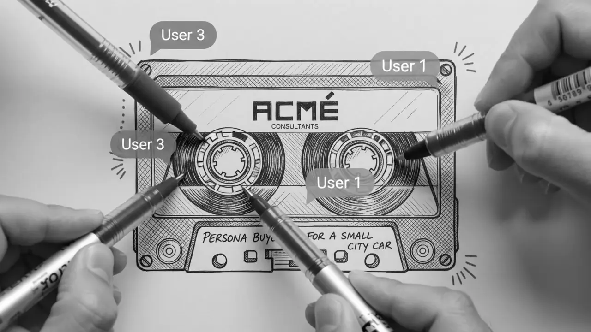

Ceux qui décideront de
l'acceptabilité ne viennent
pas aux réunions.
Une concertation réussie ne se mesure pas au nombre de participants mais à la présence de ceux qui ne viennent jamais. Ce sont eux qui décideront de l'acceptabilité du projet.

Qui parle vraiment dans une concertation ?
Chez ceux qui ne se déplacent pas. Une réunion publique recueille l'avis des disponibles et des mobilisés — deux populations qui ne représentent pas le territoire.
Le moment que tout le monde sous-estime : l'absent structurel
Les réunions publiques attirent trois profils : les riverains directement concernés, les militants organisés, et les retraités disponibles en soirée. Ce sont des avis légitimes, et ils ne composent pas le territoire.
Les actifs avec enfants, les travailleurs en horaires décalés et les publics éloignés des institutions n'y sont pas — et ce sont souvent eux qui subiront ou porteront le projet au quotidien. Aller les chercher là où ils sont est un choix de dispositif, pas une intention.
Ce qu'il faut aller observer, et comment
Groupes en salle pour la dynamique collective, complétés d'entretiens individuels sur les publics qui ne se déplacent pas — sur leur lieu de travail, à domicile, ou à distance en horaires décalés. La composition de l'échantillon est ici le cœur du dispositif : c'est elle qui rend la concertation opposable.
Le détail des dispositifs et de leur calendrier : composez le vôtre en deux minutes.
Trois questions à poser à vos données existantes
Avant d'engager du terrain, ces trois questions disent ce que vous savez déjà et où commence l'angle mort. Si vous n'avez de réponse à aucune, vous savez où commence le terrain.
- Qui n'est jamais venu à vos réunions publiques, et le savez-vous ?
- Vos contributions écrites viennent-elles des mêmes personnes que la salle ?
- Sur le dernier projet contesté, l'opposition était-elle représentée en amont ?
Un CRM sait ce qui s'est passé. Il ne sait jamais ce qui a failli se passer autrement — et c'est précisément ce qui décide.
Questions fréquentes
Comment toucher ceux qui ne viennent pas aux réunions publiques ?
En allant les chercher là où ils sont : sur leur lieu de travail, à domicile, ou à distance en horaires décalés. C'est un choix de dispositif et de budget, pas une intention — et c'est lui qui rend une concertation opposable.
Une concertation réussie se mesure-t-elle au nombre de participants ?
Non, à la présence de ceux qui ne viennent jamais. Une réunion publique recueille l'avis des riverains concernés, des militants organisés et des personnes disponibles en soirée : trois avis légitimes qui ne composent pas un territoire.
Faut-il interroger les opposants à un projet ?
Impérativement, et en amont. Une opposition qui n'a pas été entendue avant l'arbitrage réapparaît après, avec plus de force et moins de marge de manœuvre. C'est la question à poser sur le dernier projet contesté : l'opposition était-elle représentée en amont ?
Quelle différence entre concertation et étude d'opinion ?
L'étude d'opinion mesure un état à un instant ; la concertation construit une décision avec ceux qu'elle concerne. La seconde suppose que quelque chose puisse encore changer — sinon c'est de l'information, et il vaut mieux l'appeler ainsi.